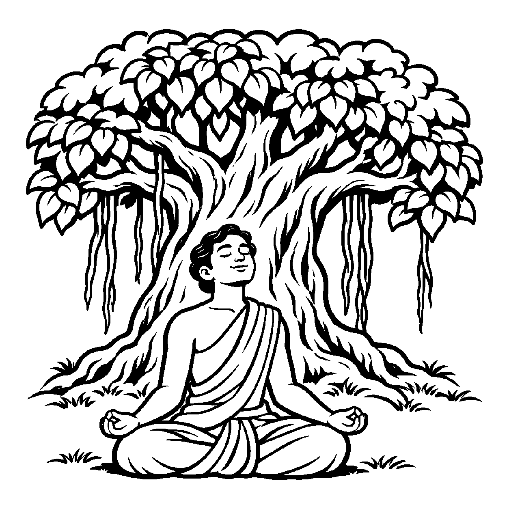

ગગનની અસીમ વિશાળતા તરફ જુઓ: આકાશમાં ક્યારેક કાળા વાદળો ગર્જના કરે છે, ક્યારેક સોનેરી સૂર્ય પ્રકાશે છે, ક્યારેક શીતળ ચંદ્ર ખીલે છે તો ક્યારેક ભયાનક આંધી ફૂંકાય છે. પરંતુ આકાશ આમાંથી કોઈ ઘટનામાં ભાગીદાર બનતું નથી, ન તો તે વાદળોથી ભીંજાય છે કે ન તો સૂર્યથી બળે છે; તે કેવળ સર્વત્ર એકરસ સાક્ષી બનીને શૂન્યાકાર વ્યાપેલું રહે છે! તેવી જ રીતે એક ઓરડાના ખૂણામાં મૂકેલો દીવો ટેબલ પર પડેલા પવિત્ર પુસ્તકને પણ તેટલા જ નિર્લેપભાવે પ્રકાશે છે જેટલા નિર્લેપભાવે તે નીચે પડેલા કચરાને પ્રકાશે છે; દીવો કોઈ ગુણ કે દોષમાં લિપ્ત થતો નથી. તેવી જ રીતે આત્મા જ્યારે જ્ઞાન, દર્શન કે સુખ જેવા ગુણોના પરસ્પર ભેદોથી પર થઈને, પ્રત્યેક ક્ષણે કેવળ એક અખંડ, નિર્વિકલ્પ સાક્ષી ઉપયોગરૂપે જ વિરાજે છે, ત્યારે તે દ્રષ્ટિકોણને 'અગુણિનય' કહેવાય છે.
ગુણિનય જ્યાં ગુણોના ભેદોને ગણાવતો હતો, ત્યાં અગુણિનય તમામ ગુણોને એક અભેદ ચૈતન્ય જ્યોતિમાં ઓગાળી દે છે. આત્મા કોઈ ગુણોનો ટુકડાવાળો સંગ્રહ નથી, પણ એક અખંડ અવિભાજ્ય જ્ઞાનપ્રકાશ છે. જ્યારે સાધક આ સાક્ષીભાવમાં સ્થિર થાય છે, ત્યારે 'હું જ્ઞાની છું' કે 'હું સુખી છું' એવો ગુણભેદ પણ શમી જાય છે અને કેવળ નિર્લેપ સત્તા શેષ રહે છે.
આ નય સાધકને તમામ માનસિક વ્યાપારોમાંથી મુક્ત કરી પરમ શાંતિ અને નિર્વાણ અર્પે છે.
ગગન સમો જે નિર્લેપ છે, સાક્ષી તણો આધાર;
અગુણિ નયથી જાણીએ, અભેદ ચૈતન્ય સાર.
ગુણ ભેદો સઘળા શમ્યા, પ્રગટી અખંડ જ્યોત;
સાક્ષીભાવે રમણ કરતાં, ટળે જન્મ ને મોત.
સાધકને તમામ માનસિક વ્યાપારોમાંથી મુક્ત કરી પરમ શાંતિ અને નિર્વાણ અર્પે છે.

ધર્મપુરીના સીમાડે એક ઘટાદાર વડનું મોટું વૃક્ષ હતું. તે વૃક્ષની નીચે વર્ષોથી નગરના ઝઘડાઓ થતા હતા: ક્યારેક બે ભાઈઓ સંપત્તિ માટે લડતા, ક્યારેક ચોર આવીને ધન સંતાડતો, તો ક્યારેક પ્રેમીઓ બેસીને સુખ-દુઃખની વાતો કરતા. એક દિવસ નગરના એક યુવાન તત્ત્વચિંતક વિનોદે તે વૃક્ષ પાસે આવીને પૂછ્યું: "ઓ વિશાળ વડરાજ! તારી સામે આટલા બધા પાપ, પુણ્ય, રુદન અને હાસ્યના ખેલ ખેલાયા; શું તારા હૃદયમાં ક્યારેય કોઈના પ્રત્યે રાગ કે દ્વેષ નથી થતો? તું આ બધાથી અસ્પૃષ્ટ કેવી રીતે રહી શકે છે?" વિનોદના હૃદયમાં સર્વ ઘટનાઓ વચ્ચે સાક્ષી રહેવાની કળા શીખવાની તીવ્ર પિપાસા હતી.
તે જ ક્ષણે તે વૃક્ષ નીચે બેઠેલા એક ધ્યાની સંતે નેત્રો ખોલ્યા અને વિનોદને કહ્યું: "વિનોદ! અગુણિનયનું પરમ રહસ્ય આ વૃક્ષ પાસેથી શીખ! આ વૃક્ષ માત્ર જુએ છે, પણ કોઈની સાથે જોડાતું નથી. તે નથી કોઈનો ન્યાય કરતું કે નથી કોઈને દંડ આપતું. તેવી જ રીતે તારા આત્માની અંદર એક પરમ સાક્ષી ચેતના બેઠી છે! મનમાં સારા વિચારો આવે કે ખરાબ વિચારો આવે, શરીરમાં રોગ આવે કે આરોગ્ય આવે; તું કોઈ ગુણ કે દોષનો માલિક ન બન, પણ કેવળ એક અલિપ્ત સાક્ષી બનીને તેને વહી જવા દે! જ્યારે તું સાક્ષી બનીશ, ત્યારે જગતનો કોઈ ઉપદ્રવ તને સ્પર્શી શકશે નહીં." આ બોધ સાંભળતાં જ વિનોદની અંદરની તમામ તાણ ઓગળી ગઈ. તેણે મનના વિચારો સાથે લડવાનું બંધ કર્યું અને કેવળ સાક્ષીભાવમાં સ્થિર થયો. તેનું ચિત્ત પરમ નીરવતા સાથે મહામૌનમાં અંતર્લીન થઈ ગયું.
જો જીવ સાક્ષીભાવના નામે કર્તવ્ય, દયા અને સંયમનો સાવ ત્યાગ કરી જડ અને નિષ્ક્રિય બની જાય, તો તે ધર્મભ્રષ્ટ થઈ જાય છે. એક જ પાસાને પકડી રાખવાથી વસ્તુની સમગ્ર અનેકાંતમય સત્તા વિખંડિત થાય છે અને સાધક પોતાના જ એકાંગી આગ્રહના બંધનમાં ફસાઈને સાચી શાંતિ ગુમાવી બેસે છે.
આ નય આંતરિક સાધનામાં તમામ ભેદોથી પર થઈ સાક્ષીભાવ પ્રગટાવવાનું પરમ માધ્યમ છે, જેથી ચેતના પોતાના આત્મસ્વરૂપમાં સ્થિર થાય છે.